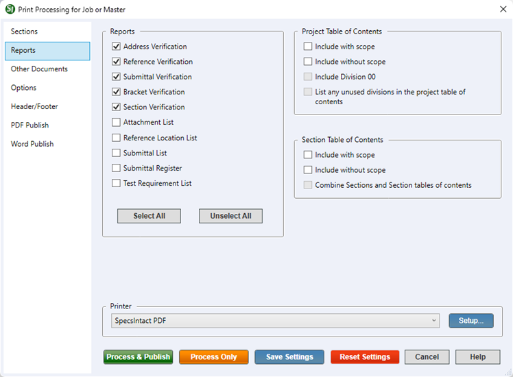

This command can also be executed from the SpecsIntact Explorer's Toolbar, Right-click menu, or by using the keyboard shortcut Ctrl+P.
The Reports tab provides the option to generate reports that are designed as quality control tools for the project. Understanding all reports is essential before releasing a completed specification. It is the specification editor's responsibility to highlight any problems found in these reports to the architect or engineer, allowing them to fix issues within the specifications.
To access your generated reports, which are saved as .rpt files, navigate to the selected Job or Master's Processed Files folder. The reports will be displayed in the SpecsIntact Explorer's Contents panel, distinguished by a gray icon  . From there, you can either print or view them as needed.
. From there, you can either print or view them as needed.
 The available options in SpecsIntact differ between Jobs and Masters, reflecting their distinct purposes and requirements.
The available options in SpecsIntact differ between Jobs and Masters, reflecting their distinct purposes and requirements.
 Reports are to be submitted with a Job if required by the contract or specifically requested by the government representative.
Reports are to be submitted with a Job if required by the contract or specifically requested by the government representative.
 Always check for typographical errors before considering a reported error as an actual discrepancy.
Always check for typographical errors before considering a reported error as an actual discrepancy.
 As you edit your Sections, regularly generate the Verification Reports to identify and address any detected errors. After correcting the errors, always regenerate the reports to confirm that all previous issues are resolved and no new errors have been introduced. This recommended process will spare you considerable time fixing project-wide specification issues towards the final deadline.
As you edit your Sections, regularly generate the Verification Reports to identify and address any detected errors. After correcting the errors, always regenerate the reports to confirm that all previous issues are resolved and no new errors have been introduced. This recommended process will spare you considerable time fixing project-wide specification issues towards the final deadline.
 Click the tabbed commands on the image below to see how to use each function.
Click the tabbed commands on the image below to see how to use each function.

- Reports - Provides access to various report options. The default selection includes the Verification Reports, including the Address, Reference, Submittal, Bracket, and Section Verification. It also provides additional reports like the Attachment List, Reference Location List, Test Requirement List, Submittal List, and Submittal Register.
- Address Verification (ADDVER.RPT) - Identifies Reference Organizations cited in a Section's Reference Article that are missing a corresponding entry in either the Sources for Reference Publications Section or the Supplemental Reference List (SRL).
- Reference Verification - The Reference Verification Report produces two distinct and separate reports to help you ensure accuracy.
- Reference Title Discrepancies (TTLFIFFS.RPT) - Identifies References from the Reference Article that share an identifier but have different titles in other Sections.
- References Verification (REFVER.RPT) - Identifies unresolved References by comparing the References in the Section(s) text against the Reference Article and Supplemental Reference List (SRL).
- Submittal Verification (SUBMVER.RPT) - Identifies Sections where Submittal Items are not properly cited in both the Submittal Article and the Section's text (outside of the Submittal Article). It also identifies invalid Classification Codes or instances where Submittal Descriptions or classifications are found outside the Submittal Article. The report additionally flags Submittal Descriptions in a Section's Submittal Article that either conflict with or are missing from the 01 33 00 Submittal Procedures Section.
- Bracket Verification (BRKTVER.RPT) - Identifies all brackets remaining in a Job's Section(s) which must be removed and replaced with text before the Job is finalized. When working with a Master, it identifies the PART containing a bracket error, whether it is due to a missing opening or closing bracket, or an incorrectly placed one.
- Section Verification (SECTVER.RPT) - Identifies Sections that cite other Sections not present in the current Job or Master.
- Attachment List (ATTACHMT.RPT) - Provides a list of all attachments (e.g., documents, graphics, certifications, reports, appendices, etc.) that are cited in a Job or Master, followed by the Sections and Subpart Numbers where they can be found.
- Reference Location List (REFKYLST.RPT) - Provides a list of all the References cited in a Job or Master, followed by the Sections and Subpart Numbers where they can be found.
- Submittal List (SUBMLIST.RPT) - Provides a list of all Submittal numbers and their descriptions specifying the Section and Subpart where each description can be found with the Submittal Article. The Submittal Descriptions are extracted from the 01 33 00 Submittal Procedures Section.
- Submittal Register (REGISTER.PDF) - Provides a comprehensive list of materials, products, or items for each Submittal cited in the Job or Master, as well as the Section and paragraph number locations and any required approval. This is a crucial report requiring submission for a Job, mandated by contract. To view the Submittal Register, you must print a hard copy or use the PDF Publish options to create a PDF document.
- Test Requirements List (TSTRQLST.RPT) - Provides a list of all test requirements cited in the text, along with the Sections and Subparts in which they can be found.
- Select All button - Selects all the reports in the list, rather than individually selecting each one.
- Unselect All button - Unselects all of the reports in the list, rather than unselecting each one.
- Project/Master and Section Table of Contents
- Include with scope - Provides a brief description of the Section requirements and is located in the Section's general note and can be printed with the Project/Master or Section Table of Contents.
- Include without scope - Provides the option to create the Table of Contents for your Project/Master or Section, but without including the Section's scope description.
- Include Division 00 - Provides the option to include the Division 00 documents in the Table of Contents for your Master or Project.
- List any unused divisions in the project table of contents - Provides the option to include a list of any Divisions in your Project Table of Contents that are present but currently empty or not in use.
- Combine Sections and Section tables of contents - Provides the option to embed the Section Table of Contents at the start of each Section, providing immediate, localized navigation. This not only streamlines content access but also removes the need for a standalone file.
Process and Print/Publish common controls
The common controls for Process and Print/Publish appear consistently across all tabs, providing a unified experience.
- Printer - Provides the option to select a different printer while displaying the printer details. The last selected printer becomes the application's default printer.
- Setup button - Opens the Print Setup window, making it simple to choose your preferred printer, define the paper Size,Source, and Orientation, and even access networked printers. The Properties button allows you to change options based on the selected printer, such as the number of copies to be printed and to enable duplex or color printing, etc.
- Process & Publish / Process & Print button - Processes the Sections and applies the selections made on each tab, then sends a copy to the selected printer (e.g., hard copy or PDF).
- Process Only button - Processes the Sections, applies your selections, and saves the results to the project's Processed Files folder for your review.
- Save Settings button - Saves selections made on each tab, except for Sections chosen for processing and printing. The next time the Print Processing window is opened, the saved selections will automatically be the new defaults (e.g., Reports, Options, Header/Footer, etc.). When saving settings that are used frequently, make those specific selections first, click the Save Settings button, and then make the additional selections you need but do not want to save as permanent defaults.
- Reset Settings button - Restores any custom selections on the tabs back to the default settings.
Standard Windows Commands
 The Cancel button will close the window without recording any selections or changes entered.
The Cancel button will close the window without recording any selections or changes entered.
 The Help button will open the Help Topic for this window.
The Help button will open the Help Topic for this window.
Additional Learning Tools
 Watch all of the eLearning modules within Chapter 4 - Process and Print/Publish and Chapter 6 - Correcting QA Report Errors and Discrepancies.
Watch all of the eLearning modules within Chapter 4 - Process and Print/Publish and Chapter 6 - Correcting QA Report Errors and Discrepancies.